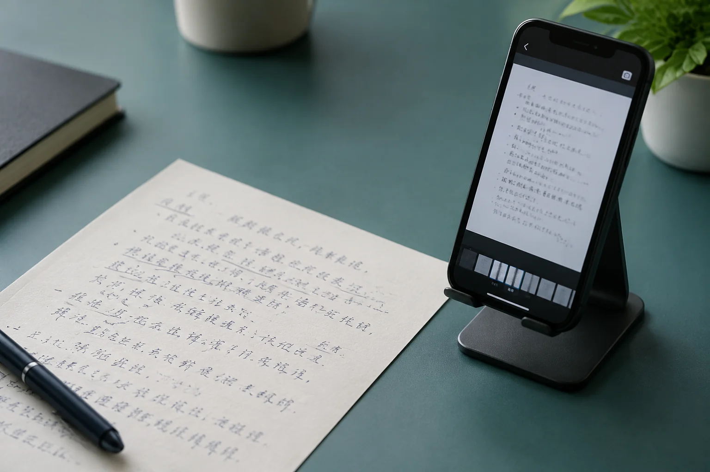

武汉笔迹鉴定材料有重影，先检查是不是拍摄晃动
线条旁边出现一条淡淡的边，不一定是写了两次。手持拍摄晃动、扫描处理或压缩，也可能改变边缘外观。

重影先看分布范围
武汉笔迹鉴定图像中，如果文字、格线和纸边都朝同一方向出现重影，应先核对拍摄或复制条件。只在一处看到双边，则仍需要具体检查。单凭一张照片不能直接认定是重描，尤其不宜把软件增强后的边缘当成原件上的真实墨线。
补图尽量稳住画面
允许重新拍摄的普通材料，可平放纸张、保持光线均匀，并在保存后放大检查。模仿笔迹参考需要整页时，不能只拍清楚中间一块就结束。页面四角和末行也应查看，避免因局部失焦或晃动影响后续阅读。
姓名局部不要反复锐化
模仿签名、模仿签字图片字数较少，放大后边缘问题会更明显。可以保存一份便于阅读的副本，但每次处理都不应覆盖原图。若原始文件已经找不到，注明目前只剩处理版，不用再次增强制造看似更清楚的细节。
对比先明确版本
同一页的相机图、扫描图和聊天下载图，可以帮助核对重影是否来自图像处理。目录中写明版本关系，不把它们算成几份独立书写。仍不能确定的现象应列为待核实，让后续比较围绕实际可见的信息继续，而不是从一个局部猜测完整经过。